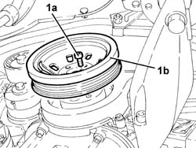
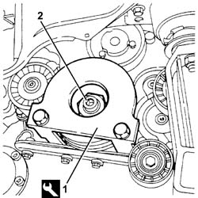
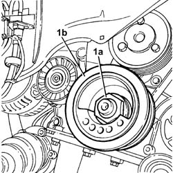
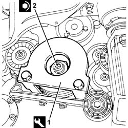
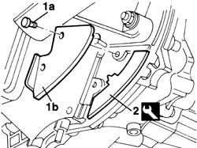
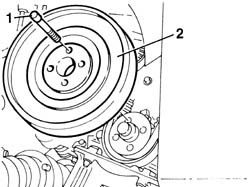
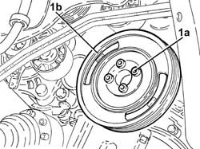
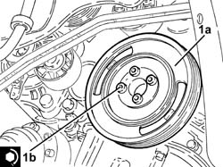

1092A10 Crankshaft services PULLEY - R.R.
- Path
- Procedures > 10 ENGINE > 1092 VARIOUS ENGINE COMPONENT CONTROLS > 1092A crankshaft pulley and idle pulleys > 1092A10 Crankshaft services PULLEY - R.R.
- Kind
- repair procedure (removal / refitting; the operation number is the code)
- Applies to
- all engines; all production periods
- Interactive page
- https://sloeber94.github.io/elrnDB-a147/en/#/3024919
Applies to: engines: 1.6 TS; all production periods
 Removing
Removing
 Refitting
RefittingPosition the vehicle on the ramp.
Proceed with the removal 4450B10 Front WHEEL (one) - R.R. (Right side).
Proceed with the removal 7055B64 Engine compartment DUST shield in front wheel arch (one), left or right - R.R. (Right side).
Proceed with the removal 1092G10 single engine belt r r .
1. Undo the bolts (1a) and remove the crankshaft pulley (1b).

Applies to: engines: 1.6 TS; all production periods
Refitting
RemovingPlace the crankshaft pulley back in its housing and secure it tightening the bolts to the recommended torque.
 | Fastening | Component | Ø | Value (daNm) |
|---|---|---|---|---|
- | Bolt | CRANKSHAFT PULLEY | M8 | 2.3 ÷ 2.8 |
Proceed with the refitting 1092G10 single engine belt r r .
Proceed with the refitting 7055B64 Engine compartment DUST shield in front wheel arch (one), left or right - R.R. (Right side).
Proceed with the refitting 4450B10 Front WHEEL (one) - R.R. (Right side).
Remove the car from the ramp.
Applies to: engines: 2.0 TS; all production periods
Removing
RefittingPosition the vehicle on the ramp.
Proceed with the removal 4450B10 Front WHEEL (one) - R.R. (Right side).
Proceed with the removal 7055B54 under-engine guard - r r .
Proceed with the removal 7055B64 Engine compartment DUST shield in front wheel arch (one), left or right - R.R. (Right side).
Proceed with the removal 1092G10 single engine belt r r .
1. Undo the bolts (1a) and remove the crankshaft pulley (1b).

Applies to: engines: 2.0 TS; all production periods
Refitting
RemovingPlace the crankshaft pulley back in its housing and secure it tightening the bolts to the recommended torque.
| Fastening | Component | Ø | Value (daNm) |
|---|---|---|---|---|
- | Bolt | CRANKSHAFT PULLEY | M8 | 2.3 ÷ 2.8 |
Proceed with the refitting 1092G10 single engine belt r r .
Proceed with the refitting 7055B64 Engine compartment DUST shield in front wheel arch (one), left or right - R.R. (Right side).
Proceed with the refitting 7055B54 under-engine guard - r r .
Proceed with the refitting 4450B10 Front WHEEL (one) - R.R. (Right side).
Remove the car from the ramp.
Applies to: engines: 3.2 V6; all production periods
Removing
RefittingPosition the vehicle on the ramp.
Proceed with removal 4450B08 right rear wheel r r .
Proceed with removal 7055B64 Engine compartment DUST shield in front wheel arch (one), left or right - R.R. .
Proceed with removal 1092G10 single engine belt r r .
1. Fit the crankshaft pulley counter-torque tool.
 | Name | Country |
|---|---|---|
1 | Counter-torque for crankshaft | 1.870.646.000 |
2. Slacken the crankshaft pulley nut.

Applies to: engines: 3.2 V6; all production periods
Remove the crankshaft pulley counter-torque tool.
1. Fully undo the nut (1a) and remove the crankshaft pulley (1b).

Applies to: engines: 3.2 V6; all production periods
Refitting
RemovingPlace the crankshaft pulley back in its housing and secure it without tightening the nut.
1. Fit the crankshaft pulley counter-torque tool.
| Name | Country |
|---|---|---|
1 | Counter-torque for crankshaft | 1.870.646.000 |
2. Tighten the crankshaft pulley nut to the specified torque.
| Fastening | Component | Ø | Value (daNm) |
|---|---|---|---|---|
2 | Left thread nut | CRANKSHAFT PULLEY | M28 | (Crankshaft side) 22.8 ÷ 25.2 |
Remove the crankshaft pulley counter-torque tool.

Applies to: engines: 3.2 V6; all production periods
Proceed with refitting 1092G10 single engine belt r r .
Proceed with refitting 7055B64 Engine compartment DUST shield in front wheel arch (one), left or right - R.R. .
Proceed with refitting 4450B08 right rear wheel r r .
Remove the car from the ramps.
Applies to: engines: 1.9 JTD 8V; all production periods
Removing
RefittingPlace the car on a ramp.
7055B54 under-engine guard - r r
7055B64 Engine compartment DUST shield in front wheel arch (one), left or right - R.R.
1092G10 single engine belt r r
1. Unscrew the retaining bolts (1a) and remove the lower flywheel protection (1b).
2. Fit the flywheel lock.
| Name | Country |
|---|---|---|
2 | Counter-torque | 1.860.898.000 |

Applies to: engines: 1.9 JTD 8V; all production periods
1. Undo the fixing bolts (1a) and remove the auxiliary shaft drive pulley (1b).

Applies to: engines: 1.9 JTD 8V; all production periods
Refitting
RemovingFit the auxiliary shaft drive pulley.
Tighten the bolts fixing the pulley to the crankshaft to torque.
| Fastening | Component | Ø | Value (daNm) |
|---|---|---|---|---|
- | Bolt | CRANKSHAFT PULLEY | M8 | 2.5 |
Remove the flywheel lock.
| Name | Country |
|---|---|---|
- | Counter-torque | 1.860.898.000 |
Fit the engine flywheel lower protection.
1092G10 single engine belt r r
7055B64 Engine compartment DUST shield in front wheel arch (one), left or right - R.R.
7055B54 under-engine guard - r r
Remove the vehicle from the ramp.
Applies to: engines: 1.9 JTD 16V; all production periods
Removing
RefittingPosition the vehicle on the ramp
Proceed with removal 4450B04 right front wheel r r .
Proceed with removal 7055B54 under-engine guard - r r .
Proceed with removal 7055B91 Right front WHEEL ARCH LINER - R.R. .
Proceed with removal 1092G10 single engine belt r r .
1. Undo the bolts (1a) and remove the crankshaft pulley (1b).

Applies to: engines: 1.9 JTD 16V; all production periods
Refitting
Removing1. Place the crankshaft pulley (1a) back in its seating and secure it tightening the bolts (1b) to the specified torque.
| Fastening | Component | Ø | Value (daNm) |
|---|---|---|---|---|
1b | Bolt | CRANKSHAFT PULLEY | M8 | 2.3 ÷ 2.8 |

Applies to: engines: 1.9 JTD 16V; all production periods
.Proceed with refitting 1092G10 single engine belt r r .
.Proceed with refitting 7055B91 Right front WHEEL ARCH LINER - R.R. .
.Proceed with refitting 7055B54 under-engine guard - r r .
.Proceed with refitting 4450B04 right front wheel r r .
Remove the car from the ramps.
Topics linked from this page (7)
- 1092G10 single engine belt r r
- 4450B04 right front wheel r r
- 4450B08 right rear wheel r r
- 4450B10 Front WHEEL (one) - R.R.
- 7055B54 under-engine guard - r r
- 7055B64 Engine compartment DUST shield in front wheel arch (one), left or right - R.R.
- 7055B91 Right front WHEEL ARCH LINER - R.R.
Topics that link to this page (52)
- 1008A46 cam shaft left rigid mount - r r
- 1008C14 engine link bracket - r r
- 1008C18 link mount on engine - r r
- 1008C19 engine link mount - r r
- 1016B10 single cylinder head extension - change gasket
- 1016C10 cylinder head - r + r and replace gasket
- 1016D20 left cylinder head - r + r and replace gasket
- 1016D24 right cylinder head - r + r and replace gasket
- 1020A20 crank case oil sump - r + r clean seals for sealant application
- 1020D12 front crank shaft oil seal cover - r + r and replace seals
- 1020D14 front crank shaft oil seal cover - r + r and replace seals for versions with oil pump on crank shaft, timing side
- 1020D15 Crankshaft oil seal FRONT COVER - R.R. and Replace. gaskets on engines with oil pump on crankshaft and heat exchanger
- 1020D18 front crank shaft cover oil seal - replace
- 1020E10 oil seal cover (one) - l or r - on counter-rotating shafts - r + r and replace seals
- 1020E20 front oil seal of one counter-rotating shaft, l or r - r + r
- 1028H10 connecting rod and piston set - r r
- 1028H20 piston with connecting rod - r r
- 1032B10 toothed timing belt - r + r for timing adjustment or replacement
- 1032B46 toothed drive pulley - r + r
- 1032B52 toothed driven pulley (one) - r + r
- 1032B54 toothed driven pulley left-hand head - r + r
- 1032B58 toothed driven pulley right-hand head - r + r
- 1032C18 mobile timing system tensioner - r + r for 24 valve engines
- 1032C32 fixed timing system tensioner (one) r + r
- 1032D12 timing system protective cover(s) - r + r
- 1036B10 overhead camshaft - r r on vehicle
- 1036C10 camshaft in cylinder head - r r on vehicle
- 1036E10 camshafts in lh cylinder head - r r on vehicle
- 1036E14 camshafts in rh cylinder head - r r on vehicle
- 1036E18 camshafts in lh and rh cylinder head - r r on vehicle
- 1036E50 front oil seals of l/h or r/h overhead camshaft - replace
- 1036E54 front oil seals of l/h overhead camshaft - replace
- 1036E58 front oil seal of r/h overhead camshafts - replace
- 1036H57 hydraulic tappets all r r
- 1036C10 camshafts in cylinder head extension - r r - includes cylinder head extension replacement if necessary
- 1036L30 front oil seal of intake camshaft in cylinder head extension replace
- 1056B51 cam angle sensor r + r
- 1060E10 pressure pump - r r
- 1060E30 pressure pump pulley - r r
- 1060E40 supplementary pressure pump - r r
- 1060G22 cam angle sensor - r r
- 1072B10 inlet manifold - r + r and replace seal
- 1084B23 oil pump control return - r r
- 1084B26 emgine oil intake duct - r r
- 1088C10 water pump - r + r
- 1092E10 counter-rotating shaft drive toothed belt - r + r
- 1092E16 counter-rotating shaft drive toothed belt tensioner - r + r
- 1092E22 counter-rotating shaft drive toothed belt drive pulley - r + r
- 1092E26 counter rotating shaft pulley - r + r
- 1092G14 engine component single belt mobile tensioner - r + r
- 1092G20 engine component single belt fixed tensioner - one - r + r
- 4130B32 power steering pump mount - r r